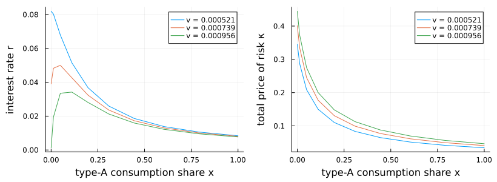

Gârleanu–Panageas with long-run risk: alternating values and prices
This example illustrates a useful way to write general-equilibrium asset-pricing systems. Rather than first solving the equilibrium pricing equations for the interest rate and prices of risk as functions of the value functions, we keep those prices as unknown functions on the grid. The unknown is
(pA, pB, ϕ1, ϕ2, r, κC, κM, κV)where the first four entries are valuation functions and the last four are state-dependent equilibrium price functions. Their equations are algebraic restrictions: the supplied r, κC, κM, and κV must equal the values implied by market clearing at that state.
This formulation is often better conditioned than eliminating prices. In a simple one-dimensional model, substituting the equilibrium r(V) and κ(V) formulas directly into the HJB can simplify the system. In higher-dimensional models with several prices of risk, the same substitution makes the PDE operator much more nonlinear: prices affect consumption volatilities, the wealth-share drift, upwind directions, and cross derivatives. Keeping prices as algebraic unknowns makes the system larger but cleaner: optimization equations and market-clearing equations are solved simultaneously.
The same trick can be useful in other asset-pricing models whenever endogenous prices, risk premia, or volatilities feed back strongly into the law of motion. It is not needed in every model: when the equilibrium prices have simple closed forms and substituting them leaves a well-conditioned HJB, the shorter reduced-form PDE is preferable. The computation alternates between fixed-price valuation equations and price updates from market clearing.
using EconPDEs
using Distributions
using Logging
using Plots
using Printf
struct GarleanuPanageasLongRunRiskModel
γA::Float64
ψA::Float64
γB::Float64
ψB::Float64
ρ::Float64
δ::Float64
νA::Float64
μbar::Float64
vbar::Float64
κμ::Float64
νμ::Float64
κv::Float64
νv::Float64
B1::Float64
δ1::Float64
B2::Float64
δ2::Float64
ω::Float64
end
function GarleanuPanageasLongRunRiskModel(;
γA = 1.5, ψA = 0.7, γB = 10.0, ψB = 0.05, ρ = 0.001,
δ = 0.02, νA = 0.01, μbar = 0.018, vbar = 0.00073,
κμ = 0.252, νμ = 0.528, κv = 0.156, νv = 0.00354,
B1 = 30.72, δ1 = 0.0525, B2 = -30.29, δ2 = 0.0611,
ω = 0.92)
scale = δ / (δ + δ1) * B1 + δ / (δ + δ2) * B2
return GarleanuPanageasLongRunRiskModel(γA, ψA, γB, ψB, ρ, δ,
νA, μbar, vbar, κμ, νμ, κv, νv, B1 / scale, δ1, B2 / scale, δ2, ω)
end
function (model::GarleanuPanageasLongRunRiskModel)(state::NamedTuple, u::NamedTuple)
(; γA, ψA, γB, ψB, ρ, δ, νA, μbar, vbar, κμ, νμ, κv, νv, B1, δ1, B2, δ2, ω) = model
(; x, μ, v) = state
pA, pB, ϕ1, ϕ2 = u.pA, u.pB, u.ϕ1, u.ϕ2
r, κC, κM, κV = u.r, u.κC, u.κM, u.κV
σc = sqrt(v)
μμ = κμ * (μbar - μ)
σμ = νμ * sqrt(v)
μv = κv * (vbar - v)
σv = νv * sqrt(v)
pAμ = (μμ >= 0) ? u.pAμ_up : u.pAμ_down
pBμ = (μμ >= 0) ? u.pBμ_up : u.pBμ_down
ϕ1μ = (μμ >= 0) ? u.ϕ1μ_up : u.ϕ1μ_down
ϕ2μ = (μμ >= 0) ? u.ϕ2μ_up : u.ϕ2μ_down
pAv = (μv >= 0) ? u.pAv_up : u.pAv_down
pBv = (μv >= 0) ? u.pBv_up : u.pBv_down
ϕ1v = (μv >= 0) ? u.ϕ1v_up : u.ϕ1v_down
ϕ2v = (μv >= 0) ? u.ϕ2v_up : u.ϕ2v_down
pAx, pBx, ϕ1x, ϕ2x = u.pAx_up, u.pBx_up, u.ϕ1x_up, u.ϕ2x_up
iter = 0
μx = 0.0
σxC = 0.0
σxM = 0.0
σxV = 0.0
σCA_C = 0.0
σCA_M = 0.0
σCA_V = 0.0
σCB_C = 0.0
σCB_M = 0.0
σCB_V = 0.0
κ2 = 0.0
mcA = 0.0
mcB = 0.0
@label start
Γ = 1 / (x / γA + (1 - x) / γB)
aA = (1 - γA * ψA) / (γA * (ψA - 1))
aB = (1 - γB * ψB) / (γB * (ψB - 1))
pAx_pA = pAx / pA
pBx_pB = pBx / pB
pAμ_pA = pAμ / pA
pBμ_pB = pBμ / pB
pAv_pA = pAv / pA
pBv_pB = pBv / pB
denom = 1 - x * aA * pAx_pA
σxC = x * (κC / γA - σc) / denom
σxM = x * (κM / γA + aA * pAμ_pA * σμ) / denom
σxV = x * (κV / γA + aA * pAv_pA * σv) / denom
σx2 = σxC^2 + σxM^2 + σxV^2
σpA_C = pAx_pA * σxC
σpA_M = pAx_pA * σxM + pAμ_pA * σμ
σpA_V = pAx_pA * σxV + pAv_pA * σv
σpB_C = pBx_pB * σxC
σpB_M = pBx_pB * σxM + pBμ_pB * σμ
σpB_V = pBx_pB * σxV + pBv_pB * σv
σCA_C = κC / γA + aA * σpA_C
σCA_M = κM / γA + aA * σpA_M
σCA_V = κV / γA + aA * σpA_V
σCB_C = κC / γB + aB * σpB_C
σCB_M = κM / γB + aB * σpB_M
σCB_V = κV / γB + aB * σpB_V
κ2 = κC^2 + κM^2 + κV^2
σpA2 = σpA_C^2 + σpA_M^2 + σpA_V^2
σpB2 = σpB_C^2 + σpB_M^2 + σpB_V^2
κσpA = κC * σpA_C + κM * σpA_M + κV * σpA_V
κσpB = κC * σpB_C + κM * σpB_M + κV * σpB_V
mcA = (1 + ψA) / (2 * γA) * κ2 + aA * κσpA - 0.5 * aA * σpA2
mcB = (1 + ψB) / (2 * γB) * κ2 + aB * κσpB - 0.5 * aB * σpB2
human_capital = ω * (B1 * ϕ1 + B2 * ϕ2)
μCA = ψA * (r - ρ) + mcA
μCB = ψB * (r - ρ) + mcB
μx = x * (μCA - μ) + δ * (νA / pA * human_capital - x) - σc * σxC
if (iter == 0) && (μx <= 0)
iter += 1
pAx, pBx, ϕ1x, ϕ2x = u.pAx_down, u.pBx_down, u.ϕ1x_down, u.ϕ2x_down
@goto start
end
pAxμ = (σxM * σμ >= 0) ? u.pAxμ_up : u.pAxμ_down
pBxμ = (σxM * σμ >= 0) ? u.pBxμ_up : u.pBxμ_down
ϕ1xμ = (σxM * σμ >= 0) ? u.ϕ1xμ_up : u.ϕ1xμ_down
ϕ2xμ = (σxM * σμ >= 0) ? u.ϕ2xμ_up : u.ϕ2xμ_down
pAxv = (σxV * σv >= 0) ? u.pAxv_up : u.pAxv_down
pBxv = (σxV * σv >= 0) ? u.pBxv_up : u.pBxv_down
ϕ1xv = (σxV * σv >= 0) ? u.ϕ1xv_up : u.ϕ1xv_down
ϕ2xv = (σxV * σv >= 0) ? u.ϕ2xv_up : u.ϕ2xv_down
ϕ1x_ϕ1 = ϕ1x / ϕ1
ϕ2x_ϕ2 = ϕ2x / ϕ2
ϕ1μ_ϕ1 = ϕ1μ / ϕ1
ϕ2μ_ϕ2 = ϕ2μ / ϕ2
ϕ1v_ϕ1 = ϕ1v / ϕ1
ϕ2v_ϕ2 = ϕ2v / ϕ2
σϕ1_C = ϕ1x_ϕ1 * σxC
σϕ1_M = ϕ1x_ϕ1 * σxM + ϕ1μ_ϕ1 * σμ
σϕ1_V = ϕ1x_ϕ1 * σxV + ϕ1v_ϕ1 * σv
σϕ2_C = ϕ2x_ϕ2 * σxC
σϕ2_M = ϕ2x_ϕ2 * σxM + ϕ2μ_ϕ2 * σμ
σϕ2_V = ϕ2x_ϕ2 * σxV + ϕ2v_ϕ2 * σv
μpA = pAx_pA * μx + pAμ_pA * μμ + pAv_pA * μv +
0.5 * u.pAxx / pA * σx2 + 0.5 * u.pAμμ / pA * σμ^2 +
0.5 * u.pAvv / pA * σv^2 + pAxμ / pA * σxM * σμ +
pAxv / pA * σxV * σv
μpB = pBx_pB * μx + pBμ_pB * μμ + pBv_pB * μv +
0.5 * u.pBxx / pB * σx2 + 0.5 * u.pBμμ / pB * σμ^2 +
0.5 * u.pBvv / pB * σv^2 + pBxμ / pB * σxM * σμ +
pBxv / pB * σxV * σv
μϕ1 = ϕ1x_ϕ1 * μx + ϕ1μ_ϕ1 * μμ + ϕ1v_ϕ1 * μv +
0.5 * u.ϕ1xx / ϕ1 * σx2 + 0.5 * u.ϕ1μμ / ϕ1 * σμ^2 +
0.5 * u.ϕ1vv / ϕ1 * σv^2 + ϕ1xμ / ϕ1 * σxM * σμ +
ϕ1xv / ϕ1 * σxV * σv
μϕ2 = ϕ2x_ϕ2 * μx + ϕ2μ_ϕ2 * μμ + ϕ2v_ϕ2 * μv +
0.5 * u.ϕ2xx / ϕ2 * σx2 + 0.5 * u.ϕ2μμ / ϕ2 * σμ^2 +
0.5 * u.ϕ2vv / ϕ2 * σv^2 + ϕ2xμ / ϕ2 * σxM * σμ +
ϕ2xv / ϕ2 * σxV * σv
σCAσpA = σCA_C * σpA_C + σCA_M * σpA_M + σCA_V * σpA_V
σCBσpB = σCB_C * σpB_C + σCB_M * σpB_M + σCB_V * σpB_V
κσpA_CA = κC * (σpA_C + σCA_C) + κM * (σpA_M + σCA_M) +
κV * (σpA_V + σCA_V)
κσpB_CB = κC * (σpB_C + σCB_C) + κM * (σpB_M + σCB_M) +
κV * (σpB_V + σCB_V)
pAt = -pA * (1 / pA + μCA + μpA + σCAσpA - r - δ - κσpA_CA)
pBt = -pB * (1 / pB + μCB + μpB + σCBσpB - r - δ - κσpB_CB)
κσϕ1_Y = κC * (σϕ1_C + σc) + κM * σϕ1_M + κV * σϕ1_V
κσϕ2_Y = κC * (σϕ2_C + σc) + κM * σϕ2_M + κV * σϕ2_V
ϕ1t = -ϕ1 * (1 / ϕ1 + μ - δ - δ1 + μϕ1 + σc * σϕ1_C - r - κσϕ1_Y)
ϕ2t = -ϕ2 * (1 / ϕ2 + μ - δ - δ2 + μϕ2 + σc * σϕ2_C - r - κσϕ2_Y)
κC_implied = Γ * (σc - x * aA * σpA_C - (1 - x) * aB * σpB_C)
κM_implied = Γ * (0.0 - x * aA * σpA_M - (1 - x) * aB * σpB_M)
κV_implied = Γ * (0.0 - x * aA * σpA_V - (1 - x) * aB * σpB_V)
r_implied = ρ + (μ - x * mcA - (1 - x) * mcB -
δ * ((νA / pA + (1 - νA) / pB) * human_capital - 1)) /
(ψA * x + ψB * (1 - x))
rt = r_implied - r
κCt = κC_implied - κC
κMt = κM_implied - κM
κVt = κV_implied - κV
return (; pAt, pBt, ϕ1t, ϕ2t, rt, κCt, κMt, κVt),
(; κ = sqrt(κ2), r_implied, κC_implied, κM_implied, κV_implied,
r_gap = rt, κC_gap = κCt, κM_gap = κMt, κV_gap = κVt,
pA_residual = pAt, pB_residual = pBt,
ϕ1_residual = ϕ1t, ϕ2_residual = ϕ2t,
μx, σx = sqrt(σx2), σxC, σxM, σxV)
endDefine the calibration and state grid.
m = GarleanuPanageasLongRunRiskModel()
xn, μn, vn = 10, 5, 5
μsd = sqrt(m.νμ^2 * m.vbar / (2 * m.κμ))
μdistribution = Normal(m.μbar, μsd)
vdistribution = Gamma(2 * m.κv * m.vbar / m.νv^2, m.νv^2 / (2 * m.κv))
xs = collect(range(0.0, 1.0, length = xn).^2)
μs = collect(range(quantile(μdistribution, 0.10),
quantile(μdistribution, 0.90), length = μn))
vs = collect(range(quantile(vdistribution, 0.10),
quantile(vdistribution, 0.90), length = vn))
stategrid = (; x = xs, μ = μs, v = vs)(x = [0.0, 0.012345679012345678, 0.04938271604938271, 0.1111111111111111, 0.19753086419753085, 0.308641975308642, 0.4444444444444444, 0.6049382716049383, 0.7901234567901234, 1.0], μ = [-0.007752308708945648, 0.005123845645527174, 0.017999999999999995, 0.03087615435447282, 0.04375230870894564], v = [0.0005209428343909922, 0.000629766522916652, 0.0007385902114423117, 0.0008474138999679716, 0.0009562375884936313])Define the initial guess for value functions and equilibrium price functions.
gridsize = map(length, values(stategrid))
pA = ones(gridsize...)
pB = ones(gridsize...)
ϕ1 = ones(gridsize...)
ϕ2 = ones(gridsize...)
r = zeros(gridsize...)
κC = zeros(gridsize...)
κM = zeros(gridsize...)
κV = zeros(gridsize...)
human_capital = m.ω * (m.B1 + m.B2)
for (ix, x) in pairs(stategrid.x), (iμ, μ) in pairs(stategrid.μ), (iv, v) in pairs(stategrid.v)
σc = sqrt(v)
Γ = 1 / (x / m.γA + (1 - x) / m.γB)
κC[ix, iμ, iv] = Γ * σc
κ2 = κC[ix, iμ, iv]^2
mcA = (1 + m.ψA) / (2 * m.γA) * κ2
mcB = (1 + m.ψB) / (2 * m.γB) * κ2
r[ix, iμ, iv] = m.ρ + (μ - x * mcA - (1 - x) * mcB -
m.δ * (human_capital - 1)) / (m.ψA * x + m.ψB * (1 - x))
end
guess = (; pA, pB, ϕ1, ϕ2, r, κC, κM, κV)(pA = [1.0 1.0 … 1.0 1.0; 1.0 1.0 … 1.0 1.0; … ; 1.0 1.0 … 1.0 1.0; 1.0 1.0 … 1.0 1.0;;; 1.0 1.0 … 1.0 1.0; 1.0 1.0 … 1.0 1.0; … ; 1.0 1.0 … 1.0 1.0; 1.0 1.0 … 1.0 1.0;;; 1.0 1.0 … 1.0 1.0; 1.0 1.0 … 1.0 1.0; … ; 1.0 1.0 … 1.0 1.0; 1.0 1.0 … 1.0 1.0;;; 1.0 1.0 … 1.0 1.0; 1.0 1.0 … 1.0 1.0; … ; 1.0 1.0 … 1.0 1.0; 1.0 1.0 … 1.0 1.0;;; 1.0 1.0 … 1.0 1.0; 1.0 1.0 … 1.0 1.0; … ; 1.0 1.0 … 1.0 1.0; 1.0 1.0 … 1.0 1.0], pB = [1.0 1.0 … 1.0 1.0; 1.0 1.0 … 1.0 1.0; … ; 1.0 1.0 … 1.0 1.0; 1.0 1.0 … 1.0 1.0;;; 1.0 1.0 … 1.0 1.0; 1.0 1.0 … 1.0 1.0; … ; 1.0 1.0 … 1.0 1.0; 1.0 1.0 … 1.0 1.0;;; 1.0 1.0 … 1.0 1.0; 1.0 1.0 … 1.0 1.0; … ; 1.0 1.0 … 1.0 1.0; 1.0 1.0 … 1.0 1.0;;; 1.0 1.0 … 1.0 1.0; 1.0 1.0 … 1.0 1.0; … ; 1.0 1.0 … 1.0 1.0; 1.0 1.0 … 1.0 1.0;;; 1.0 1.0 … 1.0 1.0; 1.0 1.0 … 1.0 1.0; … ; 1.0 1.0 … 1.0 1.0; 1.0 1.0 … 1.0 1.0], ϕ1 = [1.0 1.0 … 1.0 1.0; 1.0 1.0 … 1.0 1.0; … ; 1.0 1.0 … 1.0 1.0; 1.0 1.0 … 1.0 1.0;;; 1.0 1.0 … 1.0 1.0; 1.0 1.0 … 1.0 1.0; … ; 1.0 1.0 … 1.0 1.0; 1.0 1.0 … 1.0 1.0;;; 1.0 1.0 … 1.0 1.0; 1.0 1.0 … 1.0 1.0; … ; 1.0 1.0 … 1.0 1.0; 1.0 1.0 … 1.0 1.0;;; 1.0 1.0 … 1.0 1.0; 1.0 1.0 … 1.0 1.0; … ; 1.0 1.0 … 1.0 1.0; 1.0 1.0 … 1.0 1.0;;; 1.0 1.0 … 1.0 1.0; 1.0 1.0 … 1.0 1.0; … ; 1.0 1.0 … 1.0 1.0; 1.0 1.0 … 1.0 1.0], ϕ2 = [1.0 1.0 … 1.0 1.0; 1.0 1.0 … 1.0 1.0; … ; 1.0 1.0 … 1.0 1.0; 1.0 1.0 … 1.0 1.0;;; 1.0 1.0 … 1.0 1.0; 1.0 1.0 … 1.0 1.0; … ; 1.0 1.0 … 1.0 1.0; 1.0 1.0 … 1.0 1.0;;; 1.0 1.0 … 1.0 1.0; 1.0 1.0 … 1.0 1.0; … ; 1.0 1.0 … 1.0 1.0; 1.0 1.0 … 1.0 1.0;;; 1.0 1.0 … 1.0 1.0; 1.0 1.0 … 1.0 1.0; … ; 1.0 1.0 … 1.0 1.0; 1.0 1.0 … 1.0 1.0;;; 1.0 1.0 … 1.0 1.0; 1.0 1.0 … 1.0 1.0; … ; 1.0 1.0 … 1.0 1.0; 1.0 1.0 … 1.0 1.0], r = [0.03375388192964305 0.29127696901909944 … 0.8063231431980123 1.0638462302874687; 0.030208211297140544 0.25211640336358704 … 0.6959327874964801 0.9178409795629267; … ; 0.007345267717391194 0.030192332398931144 … 0.07588646176201104 0.09873352644355099; 0.00629777409026621 0.024692280310941672 … 0.061481292752292596 0.07987579897296805;;; 0.02232739463444878 0.27985048172390525 … 0.7948966559028182 1.0524197429922744; 0.020567563476454706 0.24247575554290124 … 0.6862921396757942 0.9082003317422408; … ; 0.007050007413562057 0.029897072095102006 … 0.0755912014581819 0.09843826613972186; 0.006099559514737328 0.024494065735412796 … 0.06128307817676372 0.07967758439743917;;; 0.010900907339254508 0.2684239944287109 … 0.7834701686076238 1.0409932556970802; 0.010926915655768869 0.23283510772221538 … 0.6766514918551085 0.8985596839215548; … ; 0.006754747109732923 0.02960181179127287 … 0.07529594115435277 0.09814300583589271; 0.005901344939208449 0.024295851159883912 … 0.061084863601234836 0.0794793698219103;;; -0.0005255799559397987 0.25699750713351666 … 0.7720436813124295 1.0295667684018859; 0.0012862678350830307 0.22319445990152953 … 0.6670108440344227 0.8889190361008691; … ; 0.0064594868059037825 0.02930655148744373 … 0.07500068085052364 0.09784774553206359; 0.005703130363679568 0.024097636584355032 … 0.060886649025705945 0.07928115524638142;;; -0.011952067251134034 0.24557101983832239 … 0.7606171940172353 1.0181402811066915; -0.008354379985602775 0.21355381208084373 … 0.6573701962137368 0.8792783882801832; … ; 0.006164226502074645 0.0290112911836146 … 0.07470542054669449 0.09755248522823444; 0.005504915788150689 0.02389942200882615 … 0.06068843445017707 0.07908294067085254], κC = [0.22824172151274014 0.22824172151274014 … 0.22824172151274014 0.22824172151274014; 0.21331822433690714 0.21331822433690714 … 0.21331822433690714 0.21331822433690714; … ; 0.041669976204053986 0.041669976204053986 … 0.041669976204053986 0.041669976204053986; 0.03423625822691102 0.03423625822691102 … 0.03423625822691102 0.03423625822691102;;; 0.25095149390203914 0.25095149390203914 … 0.25095149390203914 0.25095149390203914; 0.23454312699305968 0.23454312699305968 … 0.23454312699305968 0.23454312699305968; … ; 0.04581608791750226 0.04581608791750226 … 0.04581608791750226 0.04581608791750226; 0.037642724085305876 0.037642724085305876 … 0.037642724085305876 0.037642724085305876;;; 0.2717701623508938 0.2717701623508938 … 0.2717701623508938 0.2717701623508938; 0.25400057481256616 0.25400057481256616 … 0.25400057481256616 0.25400057481256616; … ; 0.04961694173648925 0.04961694173648925 … 0.04961694173648925 0.04961694173648925; 0.04076552435263407 0.04076552435263407 … 0.04076552435263407 0.04076552435263407;;; 0.29110374438814274 0.29110374438814274 … 0.29110374438814274 0.29110374438814274; 0.2720700380243027 0.2720700380243027 … 0.2720700380243027 0.2720700380243027; … ; 0.053146664076873545 0.053146664076873545 … 0.053146664076873545 0.053146664076873545; 0.04366556165822141 0.04366556165822141 … 0.04366556165822141 0.04366556165822141;;; 0.30923091509317613 0.30923091509317613 … 0.30923091509317613 0.30923091509317613; 0.2890119706447762 0.2890119706447762 … 0.2890119706447762 0.2890119706447762; … ; 0.05645613250761969 0.05645613250761969 … 0.05645613250761969 0.05645613250761969; 0.04638463726397642 0.04638463726397642 … 0.04638463726397642 0.04638463726397642], κM = [0.0 0.0 … 0.0 0.0; 0.0 0.0 … 0.0 0.0; … ; 0.0 0.0 … 0.0 0.0; 0.0 0.0 … 0.0 0.0;;; 0.0 0.0 … 0.0 0.0; 0.0 0.0 … 0.0 0.0; … ; 0.0 0.0 … 0.0 0.0; 0.0 0.0 … 0.0 0.0;;; 0.0 0.0 … 0.0 0.0; 0.0 0.0 … 0.0 0.0; … ; 0.0 0.0 … 0.0 0.0; 0.0 0.0 … 0.0 0.0;;; 0.0 0.0 … 0.0 0.0; 0.0 0.0 … 0.0 0.0; … ; 0.0 0.0 … 0.0 0.0; 0.0 0.0 … 0.0 0.0;;; 0.0 0.0 … 0.0 0.0; 0.0 0.0 … 0.0 0.0; … ; 0.0 0.0 … 0.0 0.0; 0.0 0.0 … 0.0 0.0], κV = [0.0 0.0 … 0.0 0.0; 0.0 0.0 … 0.0 0.0; … ; 0.0 0.0 … 0.0 0.0; 0.0 0.0 … 0.0 0.0;;; 0.0 0.0 … 0.0 0.0; 0.0 0.0 … 0.0 0.0; … ; 0.0 0.0 … 0.0 0.0; 0.0 0.0 … 0.0 0.0;;; 0.0 0.0 … 0.0 0.0; 0.0 0.0 … 0.0 0.0; … ; 0.0 0.0 … 0.0 0.0; 0.0 0.0 … 0.0 0.0;;; 0.0 0.0 … 0.0 0.0; 0.0 0.0 … 0.0 0.0; … ; 0.0 0.0 … 0.0 0.0; 0.0 0.0 … 0.0 0.0;;; 0.0 0.0 … 0.0 0.0; 0.0 0.0 … 0.0 0.0; … ; 0.0 0.0 … 0.0 0.0; 0.0 0.0 … 0.0 0.0])Alternate between prices and value functions. Holding r, κC, κM, and κV fixed, solve the valuation block (pA, pB, ϕ1, ϕ2). Then update prices toward the values implied by market clearing.
struct GarleanuPanageasLongRunRiskFrozenPriceModel
model::GarleanuPanageasLongRunRiskModel
stategrid::NamedTuple
r::Array{Float64, 3}
κC::Array{Float64, 3}
κM::Array{Float64, 3}
κV::Array{Float64, 3}
end
function (model::GarleanuPanageasLongRunRiskFrozenPriceModel)(
state::NamedTuple, u::NamedTuple)
ix = searchsortedfirst(model.stategrid.x, state.x)
iμ = searchsortedfirst(model.stategrid.μ, state.μ)
iv = searchsortedfirst(model.stategrid.v, state.v)
u_with_prices = merge(u, (; r = model.r[ix, iμ, iv],
κC = model.κC[ix, iμ, iv],
κM = model.κM[ix, iμ, iv],
κV = model.κV[ix, iμ, iv]))
out, saved = model.model(state, u_with_prices)
return (; pAt = out.pAt, pBt = out.pBt, ϕ1t = out.ϕ1t, ϕ2t = out.ϕ2t), saved
end
damping = 0.5
warmup_maxiters = 20
warmup_inner_maxiters = 10
warmups_between_global_attempts = 10
reuse_failed_global_tol = 1e-4
initial_result = with_logger(NullLogger()) do
pdesolve(m, stategrid, guess; alg = NonlinearSolve.TrustRegion(), Δ = Inf,
verbose = false)
end
@printf "%4s %-8s %12s %12s %12s %12s %12s %12s\n" "iter" "step" "r_gap" "κC_gap" "κM_gap" "κV_gap" "value_change" "residual"
@printf "%4d %-8s %12s %12s %12s %12s %12s %12.3e\n" 0 "global" "-" "-" "-" "-" "-" initial_result.residual_norm
if initial_result.converged
new_guess = initial_result.solution
result = initial_result
else
new_guess, result = let
if initial_result.residual_norm <= reuse_failed_global_tol
value_guess = (; pA = copy(initial_result.solution.pA),
pB = copy(initial_result.solution.pB),
ϕ1 = copy(initial_result.solution.ϕ1),
ϕ2 = copy(initial_result.solution.ϕ2))
r = copy(initial_result.solution.r)
κC = copy(initial_result.solution.κC)
κM = copy(initial_result.solution.κM)
κV = copy(initial_result.solution.κV)
candidate_guess = initial_result.solution
else
value_guess = (; pA = copy(guess.pA), pB = copy(guess.pB),
ϕ1 = copy(guess.ϕ1), ϕ2 = copy(guess.ϕ2))
r = copy(guess.r)
κC = copy(guess.κC)
κM = copy(guess.κM)
κV = copy(guess.κV)
candidate_guess = guess
end
price_iteration = 0
trial_result = nothing
warmups_since_global_attempt = 0
while trial_result === nothing
price_iteration += 1
frozen_model = GarleanuPanageasLongRunRiskFrozenPriceModel(
m, stategrid, r, κC, κM, κV)
frozen_result = with_logger(NullLogger()) do
pdesolve(frozen_model, stategrid, value_guess;
is_algebraic = (; pA = false, pB = false,
ϕ1 = false, ϕ2 = false),
alg = NonlinearSolve.TrustRegion(),
maxiters = warmup_maxiters,
inner_maxiters = warmup_inner_maxiters, verbose = false)
end
r_gap = maximum(abs, frozen_result.saved.r_gap)
κC_gap = maximum(abs, frozen_result.saved.κC_gap)
κM_gap = maximum(abs, frozen_result.saved.κM_gap)
κV_gap = maximum(abs, frozen_result.saved.κV_gap)
pA_change = maximum(abs, frozen_result.solution.pA .- value_guess.pA) /
max(1.0, maximum(abs, value_guess.pA))
pB_change = maximum(abs, frozen_result.solution.pB .- value_guess.pB) /
max(1.0, maximum(abs, value_guess.pB))
ϕ1_change = maximum(abs, frozen_result.solution.ϕ1 .- value_guess.ϕ1) /
max(1.0, maximum(abs, value_guess.ϕ1))
ϕ2_change = maximum(abs, frozen_result.solution.ϕ2 .- value_guess.ϕ2) /
max(1.0, maximum(abs, value_guess.ϕ2))
warmup_change = max(pA_change, pB_change, ϕ1_change, ϕ2_change)
value_guess = frozen_result.solution
r .= (1 - damping) .* r .+ damping .* frozen_result.saved.r_implied
κC .= (1 - damping) .* κC .+ damping .* frozen_result.saved.κC_implied
κM .= (1 - damping) .* κM .+ damping .* frozen_result.saved.κM_implied
κV .= (1 - damping) .* κV .+ damping .* frozen_result.saved.κV_implied
warmups_since_global_attempt += 1
candidate_guess = (; value_guess.pA, value_guess.pB, value_guess.ϕ1,
value_guess.ϕ2, r, κC, κM, κV)
@printf "%4d %-8s %12.3e %12.3e %12.3e %12.3e %12.3e %12s\n" price_iteration "values" r_gap κC_gap κM_gap κV_gap warmup_change "-"
if warmups_since_global_attempt >= warmups_between_global_attempts
trial_result = with_logger(NullLogger()) do
pdesolve(m, stategrid, candidate_guess;
alg = NonlinearSolve.TrustRegion(), Δ = Inf,
verbose = false)
end
@printf "%4d %-8s %12s %12s %12s %12s %12s %12.3e\n" price_iteration "global" "-" "-" "-" "-" "-" trial_result.residual_norm
warmups_since_global_attempt = 0
end
if trial_result !== nothing
if trial_result.converged
candidate_guess = trial_result.solution
break
end
if trial_result.residual_norm <= reuse_failed_global_tol
value_guess = (; pA = trial_result.solution.pA,
pB = trial_result.solution.pB,
ϕ1 = trial_result.solution.ϕ1,
ϕ2 = trial_result.solution.ϕ2)
r .= (1 - damping) .* r .+ damping .* trial_result.solution.r
κC .= (1 - damping) .* κC .+ damping .* trial_result.solution.κC
κM .= (1 - damping) .* κM .+ damping .* trial_result.solution.κM
κV .= (1 - damping) .* κV .+ damping .* trial_result.solution.κV
end
trial_result = nothing
continue
end
end
(; value_guess.pA, value_guess.pB, value_guess.ϕ1, value_guess.ϕ2,
r, κC, κM, κV), trial_result
end
end((pA = [26.390123683999615 22.855522913430796 … 15.485451729995003 13.173217424950654; 28.2956935463158 25.431181440346396 … 19.37760995804601 17.511958435930232; … ; 37.85711805300496 37.389746255904164 … 36.19577606119455 35.753418034841346; 38.54407066499032 38.141842895771276 … 37.10253663489965 36.713419158094254;;; 26.215468633505267 22.888316215422062 … 15.757616118687308 13.507381407476645; 28.13576065450736 25.436401491988352 … 19.571421459659437 17.762710788503362; … ; 37.81708310657338 37.373922123228276 … 36.222867625641854 35.80184931379631; 38.50886794308677 38.127286299534696 … 37.12557023742519 36.755553016896556;;; 26.04647105152615 22.932446797452414 … 16.073895089803248 13.896054011630113; 27.97752578928857 25.44832341421309 … 19.800735187553453 18.054234480910466; … ; 37.773588166900595 37.35596038511245 … 36.25449361410346 35.856166807349304; 38.470513197431295 38.110743324566315 … 37.15245557886142 36.80272481315555;;; 25.902210207481588 22.971738203672412 … 16.363708071040264 14.2558835612515; 27.841496653258382 25.459176209173982 … 20.014011222174844 18.325401160675415; … ; 37.73461534463964 37.33941326127314 … 36.28363515097297 35.905408237592816; 38.436113536755926 38.0955254949274 … 37.1772306038788 36.84543736408235;;; 25.790983370097376 22.99400275363347 … 16.57205949398009 14.518362655160452; 27.737932388356796 25.462445075541975 … 20.168434153368928 18.524590894952897; … ; 37.70588137457681 37.327065776310235 … 36.304733811505024 35.94127520517695; 38.41078061886366 38.08421429273888 … 37.19517502309768 36.87653932712591], pB = [41.082732703245824 26.60457323768097 … 7.002590172841286 4.357203772015054; 44.7007428971145 31.38465865395275 … 11.93519968981587 8.406339293651122; … ; 35.11518321983922 33.71439004422827 … 30.305152764919793 29.102281307983883; 35.32303229869158 34.17810746107104 … 31.326198798499668 30.296955510524725;;; 40.19914464447089 26.67474531298914 … 7.321413776855872 4.633430429594547; 43.946317599734144 31.49275547157512 … 12.371461214043773 8.81906459752741; … ; 35.008915907061564 33.683599566442396 … 30.39367741200685 29.24405766856019; 35.23203779720634 34.14783010384519 … 31.397329420667507 30.4155700201236;;; 39.31513876650757 26.73568510602374 … 7.730462648404406 4.983253406098028; 43.205132776557285 31.610948200053784 … 12.903287692387085 9.323229752764576; … ; 34.8957640209039 33.6494667674607 … 30.497483909777035 29.404848116290037; 35.134394644765024 34.11397193572631 … 31.480656613644083 30.54957993083684;;; 38.5750712355729 26.78704442186027 … 8.141035782832818 5.338188457488918; 42.5866898366608 31.715438055947633 … 13.417100421456139 9.817864236078158; … ; 34.79492694253196 33.617648941523306 … 30.593058715356015 29.551373436881807; 35.04717118368821 34.082593212686604 … 31.557352671971827 30.67140181995844;;; 38.03992778126775 26.821289905502216 … 8.453166672913692 5.6150378649467605; 42.13277498317037 31.782836880896596 … 13.801677184135755 10.196299260553822; … ; 34.71980839700144 33.59286848589971 … 30.661838073910168 29.657906605693857; 34.982426975042635 34.05860024853792 … 31.612585191390345 30.75993582211691], ϕ1 = [20.897738616617925 13.901427987222913 … 4.309577331289793 2.8479688271097876; 21.848750934894127 15.5842067445239 … 6.402636419590901 4.668620853590787; … ; 15.21158045953614 14.9469232259677 … 14.292377760707067 14.054815524307656; 15.27760550867344 15.127081143648958 … 14.74096610919299 14.596019645319036;;; 20.52842415464168 13.969789655093267 … 4.484239146570998 3.00084822753994; 21.540848097057204 15.661507511958193 … 6.612627970342308 4.8681381530570444; … ; 15.191419236280725 14.94035534873993 … 14.307755935030567 14.080765256945345; 15.265213115240222 15.122215962490657 … 14.749360231794366 14.611263077626047;;; 20.16701636410927 14.040327097837682 … 4.700779710602325 3.1902985515733033; 21.245196448793788 15.748246585883797 … 6.867075609391307 5.110117207629698; … ; 15.169810073957544 14.932979072096796 … 14.325749240545742 14.109998707519672; 15.251781996401593 15.116709287124154 … 14.75917389455017 14.628334293739256;;; 19.866081613843974 14.10260868880981 … 4.914826457822483 3.380501150358953; 21.00007072276062 15.826097985744886 … 7.113166935262862 5.347569936368476; … ; 15.15043329307888 14.926093099215533 … 14.342385357153384 14.136668289746096; 15.239697865248038 15.11160613551261 … 14.768247749607662 14.64384847806687;;; 19.64501037720871 14.145667560362151 … 5.078241509208479 3.5292733873757474; 20.817208987943022 15.878521121464567 … 7.298568327216545 5.530383710978009; … ; 15.135954107820424 14.920789153531624 … 14.354462895409211 14.156204329072263; 15.230714707310542 15.107755233817208 … 14.774844050197462 14.655204123130078], ϕ2 = [19.01524445695755 12.712858526517644 … 4.050923030544344 2.701495113327255; 19.766881692543823 14.140320207681464 … 5.887056430088711 4.316284723964656; … ; 13.538169625552424 13.306363520463925 … 12.733773972006706 12.525585594247538; 13.576886693428316 13.445647369688233 … 13.10950138580232 12.983098346663306;;; 18.69216775120243 12.780143308830556 … 4.211850670312314 2.8426140355817244; 19.498114416156568 14.214020198708052 … 6.076349400994113 4.496325288524711; … ; 13.520716500509485 13.300709341578552 … 12.747033471270498 12.548026984329223; 13.56621050503993 13.441470272073632 … 13.116684493269219 12.996196974529042;;; 18.37749198757469 12.850441949318267 … 4.410159726901463 3.016830784474876; 19.241286687808824 14.29691374233048 … 6.30543245997759 4.714364080815984; … ; 13.502014241982101 13.294352547026158 … 12.762541854870669 12.573288518485525; 13.554641883259514 13.436738082313644 … 13.125078888541521 13.010853472539077;;; 18.115806058916693 12.912727345523084 … 4.605651334641734 3.191420561096113; 19.02866198726523 14.371452253815256 … 6.527040454189793 4.92833062957066; … ; 13.485229546825938 13.288410517826785 … 12.776899694808236 12.596358001187776; 13.544223192488385 13.432346806464478 … 13.13285231132023 13.024188031424526;;; 17.922942120092095 12.955939474966321 … 4.755028178257661 3.3280565283939043; 18.86951181870614 14.42191455249772 … 6.694221441283963 5.093271541747817; … ; 13.472667984046526 13.283827857718439 … 12.787347960816765 12.613294042175076; 13.536465060447588 13.429028638679602 … 13.13851835457153 13.03397188014337], r = [-0.4220102143345539 -0.17027415011885622 … 0.24409718003845243 0.6826740292428112; -0.3685997961494819 -0.1549499368930321 … 0.2563235195638903 0.53765182975655; … ; -0.0320007231922667 -0.010277332910608398 … 0.0323200968970044 0.05392294738505119; -0.025680978631421502 -0.008220491794134735 … 0.02598174595248546 0.04333230918705876;;; -0.4347628757129981 -0.18762642553872605 … 0.199141983054557 0.6571535173448516; -0.37971052597426835 -0.169106156475137 … 0.2330399501352438 0.5208487848219385; … ; -0.03237171211658759 -0.01059268583559772 … 0.032114451477200656 0.053779319099057366; -0.02594663898078413 -0.008438344631347747 … 0.025856776621783123 0.04325832691609927;;; -0.4463738620353015 -0.20332197340073854 … 0.16666853696969267 0.6338249672970375; -0.38999342033887396 -0.18202976529931436 … 0.21408805197596067 0.5056537479112905; … ; -0.03274732270522546 -0.010909839124438627 … 0.0319239576892863 0.05365471448251723; -0.026217526585823617 -0.00865919362958834 … 0.0257430582145989 0.04319912336938635;;; -0.4577924959897628 -0.21835872372644846 … 0.14097341044998896 0.6123938258433888; -0.40010121171890767 -0.19444683386242773 … 0.197488970008542 0.4915705508406669; … ; -0.033114473411068115 -0.011225640969022874 … 0.031724941954039736 0.053514091430444166; -0.02648103535336607 -0.008878725278816507 … 0.02562219880290424 0.043126526736553525;;; -0.46984325001242144 -0.23385761345113298 … 0.11397413662326124 0.592654370748438; -0.4106121438720335 -0.2071705108483094 … 0.1805925561916326 0.4780580574297347; … ; -0.03346386045778957 -0.01153735581644686 … 0.03149884089130949 0.05333092299058955; -0.026728038691357838 -0.00909322385996035 … 0.025479967870970614 0.043019411276250474], κC = [0.22824164022449178 0.22824173457537603 … 0.22824188605290674 0.22824185888977108; 0.21981739277278944 0.2245570482492517 … 0.2247408289127107 0.22867340482185267; … ; 0.041598966947768504 0.04159508661329918 … 0.04158545678994133 0.04158197044457263; 0.03423625669042899 0.03423625783791434 … 0.034236258025967276 0.03423625801982438;;; 0.2509514104474513 0.2509515052706498 … 0.250951677997185 0.2509516519209597; 0.24196623242875068 0.24690830266499386 … 0.2467107557066928 0.2508388844786624; … ; 0.04573761044094709 0.045733566020925244 … 0.045723358429441474 0.045719709397763125; 0.037642722802583996 0.037642723649384376 … 0.03764272386424221 0.03764272386043103;;; 0.2717700793713818 0.2717701725316025 … 0.2717703641140172 0.2717703411822532; 0.26236693873932326 0.2674380861033739 … 0.26668597563168106 0.27091620699953783; … ; 0.04953147231972642 0.049527346988663894 … 0.04951676907776163 0.049513029081970764; 0.04076552322574563 0.0407655238790145 … 0.04076552411368438 0.04076552411254855;;; 0.2911036626282226 0.2911037539971614 … 0.29110396089917423 0.29110394298408326; 0.2813368066579748 0.2865139997554168 … 0.28517269903883036 0.2894647084395572; … ; 0.05305465119159878 0.05305047235345893 … 0.05303961234744655 0.053035807047272635; 0.04366556061674592 0.043665561153940394 … 0.04366556140289092 0.04366556140446759;;; 0.30923083557743214 0.3092309254609523 … 0.3092311387475778 0.3092311276887353; 0.2990859901080865 0.3043841920770121 … 0.30255877492993594 0.3069311543045937; … ; 0.0563580312641543 0.05635377830586606 … 0.05634260789050551 0.05633872258367762; 0.04638463625159907 0.04638463673079869 … 0.046384636991345596 0.046384636995254136], κM = [-0.17185087287704184 -0.22465302715637162 … -0.48760838543177953 -0.28746263362186086; -0.1362772760567782 -0.17726636504898824 … -0.29088626846402527 -0.19709647484560677; … ; 0.0011060411718737107 0.001448097382640168 … 0.0014292820978993486 0.001085333675103822; 0.0016276595633385625 0.0021394574434723946 … 0.0021696447030079067 0.0016531402069176915;;; -0.18034295377806114 -0.23963728074493468 … -0.5194756082757062 -0.30265019824487777; -0.1427470408783302 -0.18847877685376305 … -0.3092808764780287 -0.2075933053739163; … ; 0.001154546758422937 0.0015342890809125391 … 0.00151478691449122 0.0011336491078584052; 0.0016993022215628544 0.00226693685719616 … 0.002299037984060021 0.0017264254939948177;;; -0.18570966816716164 -0.2505786280827338 … -0.5366967730802922 -0.31212405587112135; -0.1466333381135032 -0.19636512753298213 … -0.3202852428478822 -0.21390262764573198; … ; 0.0011797468189313253 0.0015891228434405827 … 0.0015695135958337068 0.0011592278459644574; 0.0017368155702184697 0.0023483227214581553 … 0.0023814107246468703 0.0017648806353601522;;; -0.1899567048775207 -0.25961747037835364 … -0.5470573362141111 -0.3189758985753076; -0.14962727940586468 -0.2027716704844505 … -0.32791834171563583 -0.21834888160557855; … ; 0.001197045581186286 0.0016307190859798297 … 0.0016112021619744698 0.0011770208654444014; 0.001762763749207677 0.0024102633552992962 … 0.0024438864877985916 0.0017913975549045764;;; -0.19471765461208046 -0.2688710269473584 … -0.5597529311696909 -0.3265736644215206; -0.1531074838308078 -0.2094649908273742 … -0.3365883334918107 -0.22341397329695867; … ; 0.0012197954636707494 0.0016767610566050094 … 0.0016571608110683893 0.0011999962892928803; 0.00179662960720736 0.002478693532917386 … 0.002513004931015745 0.001825946250429413], κV = [-0.008071711501252016 0.001269401964137638 … 0.01736671245308305 0.023840113401263848; -0.0060320358742872076 0.0013143878299559397 … 0.013343950865203156 0.018225007038024744; … ; 8.094886577994246e-5 3.682562735234947e-5 … -4.5818381655336153e-5 -8.911751994549247e-5; 0.00011302346784653126 4.72399793695765e-5 … -7.678530639439276e-5 -0.00014197106313567482;;; -0.009022699490212827 0.0012936438980440433 … 0.023246954294938227 0.031114604616076433; -0.006614325764210201 0.00159306154882078 … 0.0172021028046005 0.023246085640999507; … ; 9.776697285691409e-5 4.636731901169258e-5 … -5.863372941718725e-5 -0.00010905627759524377; 0.00013552100464758594 5.9053598605633295e-5 … -9.84795800585678e-5 -0.0001745565681986116;;; -0.009981874113254229 0.0013962631344897666 … 0.023880921637627516 0.031413759014104196; -0.007292628447472079 0.001719072697292368 … 0.01785403100370132 0.023799721173166772; … ; 0.00010588368800330423 5.022896874117836e-5 … -6.359229393334425e-5 -0.00011830058345222854; 0.0001469096467167036 6.3980391821805e-5 … -0.00010657223461188006 -0.00018879539718209804;;; -0.009105345666538598 0.001275603434676289 … 0.024319319226613657 0.03186784696255715; -0.006616997655902428 0.0016287526308873153 … 0.01774334222470682 0.02370036062062638; … ; 0.00010193026216098993 4.9368356129027946e-5 … -6.289977709936909e-5 -0.00011456290188775167; 0.00014125866499280096 6.306598077948624e-5 … -0.00010512565353325362 -0.00018289848298050614;;; -0.007112106603701894 0.0009117859567672249 … 0.018951164531584977 0.025165046200295436; -0.005232701025970213 0.0011156600325862502 … 0.013717832657537087 0.01854240946514063; … ; 7.938663583807174e-5 3.851877862240767e-5 … -4.869774831279316e-5 -8.887406982248863e-5; 0.00011057414426670969 4.980595430786618e-5 … -8.084873855819952e-5 -0.0001413598223760418]), EconPDEResult
solution: pA (10×5×5), pB (10×5×5), ϕ1 (10×5×5), ϕ2 (10×5×5), r (10×5×5), κC (10×5×5), κM (10×5×5), κV (10×5×5)
saved: pA, pB, ϕ1, ϕ2, r, κC, κM, κV, κ, r_implied, κC_implied, κM_implied, κV_implied, r_gap, κC_gap, κM_gap, κV_gap, pA_residual, pB_residual, ϕ1_residual, ϕ2_residual, μx, σx, σxC, σxM, σxV
residual_norm: 1.89e-12
converged: true (tolerance 1.49e-08))The solution
The model has three state variables, so we inspect one-dimensional slices of the equilibrium price schedules. First vary expected growth $\mu$ while holding variance fixed at the middle grid point. Then vary variance $v$ while holding expected growth fixed at the middle grid point. The total price of risk is $\kappa = \sqrt{\kappa_C^2 + \kappa_\mu^2 + \kappa_v^2}$.
xgrid = stategrid.x
μ_mid_index = cld(length(stategrid.μ), 2)
v_mid_index = cld(length(stategrid.v), 2)
μ_indices = unique([1, μ_mid_index, length(stategrid.μ)])
v_indices = unique([1, v_mid_index, length(stategrid.v)])
r_by_μ = plot(; xlabel = "type-A consumption share x", ylabel = "interest rate r")
κ_by_μ = plot(; xlabel = "type-A consumption share x", ylabel = "total price of risk κ")
for iμ in μ_indices
label = "μ = $(round(stategrid.μ[iμ]; digits = 3))"
plot!(r_by_μ, xgrid, result.solution.r[:, iμ, v_mid_index]; label)
plot!(κ_by_μ, xgrid, result.saved.κ[:, iμ, v_mid_index]; label)
end
plot(r_by_μ, κ_by_μ; layout = (1, 2), size = (820, 300))
r_by_v = plot(; xlabel = "type-A consumption share x", ylabel = "interest rate r")
κ_by_v = plot(; xlabel = "type-A consumption share x", ylabel = "total price of risk κ")
for iv in v_indices
label = "v = $(round(stategrid.v[iv]; sigdigits = 3))"
plot!(r_by_v, xgrid, result.solution.r[:, μ_mid_index, iv]; label)
plot!(κ_by_v, xgrid, result.saved.κ[:, μ_mid_index, iv]; label)
end
plot(r_by_v, κ_by_v; layout = (1, 2), size = (820, 300))
This page was generated using Literate.jl.